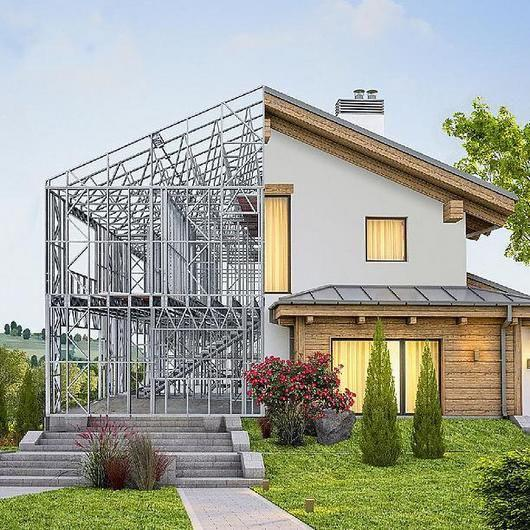
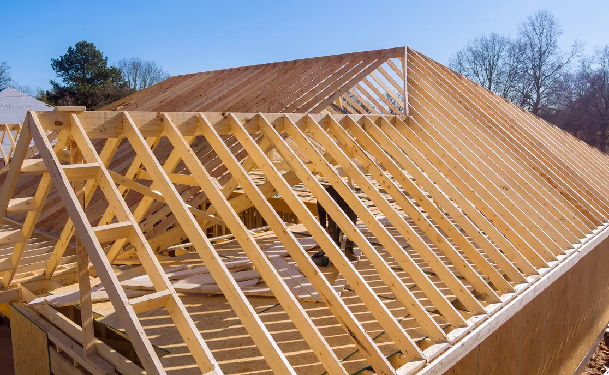
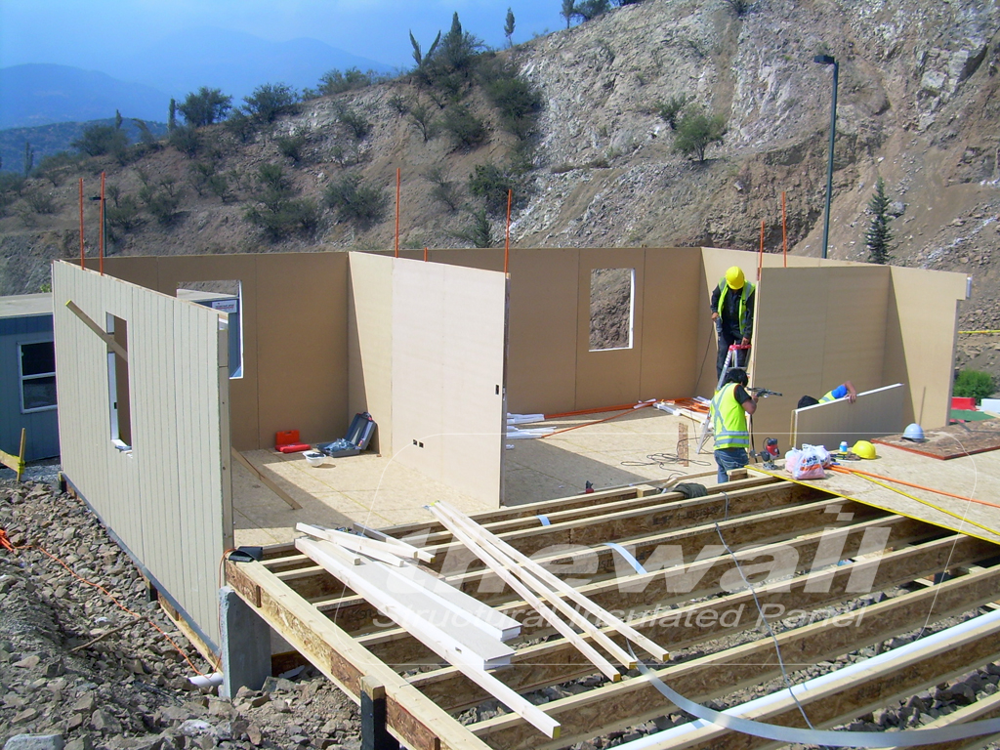
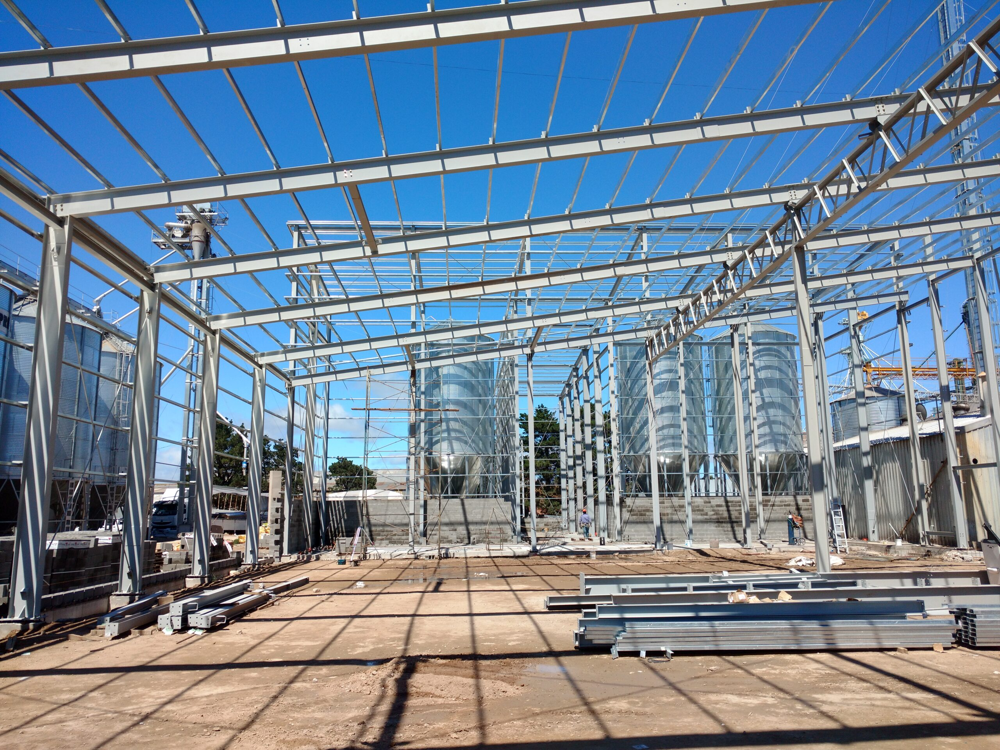
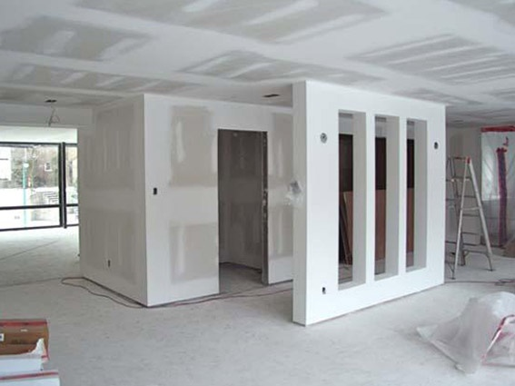
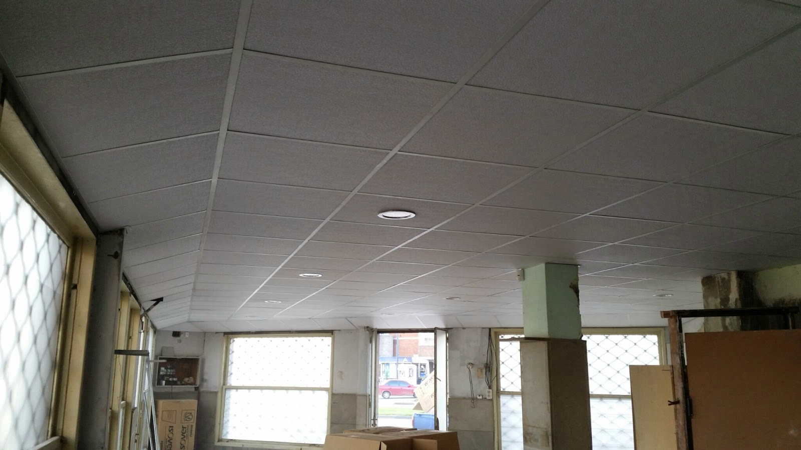
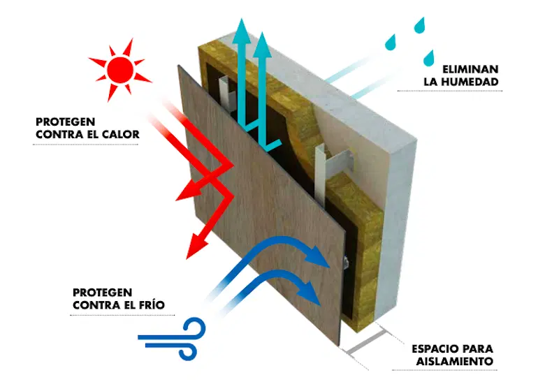

Sistemas de construcción en seco

El universo de la construcción en seco abarca mucho más que perfiles y placas de yeso. La clave para clasificar estos sistemas es entender su función física y mecánica en la obra. La distinción principal que define cómo se calcula un proyecto es la diferencia entre los sistemas estructurales (los que soportan el peso del edificio), los sistemas no estructurales (los que dividen espacios), los sistemas de envolvente (que protegen del clima) y los sistemas modulares (prefabricación total).
El impacto logístico
En Argentina, existe un organismo dedicado exclusivamente a estudiar, estandarizar y promover este método constructivo, llamado Instituto de la Construcción en Seco (INCOSE). Este instituto afirma que una vivienda construida con Steel Framing pesa apenas un 10% en comparación con una obra húmeda tradicional.
1. Sistemas estructurales (El esqueleto portante)
Estos sistemas soportan el peso de la edificación. Transmiten las cargas gravitatorias y dinámicas hacia las fundaciones. Requieren cálculo de ingeniería civil.

Steel Framing
Sistema compuesto por perfiles de chapa de acero galvanizado estructural (calibres de 0.9mm o superiores). Al ser un material inorgánico, no sufre ataques de termitas y es completamente incombustible.
Ver unidad completa →
Wood Framing
Entramado de listones de madera aserrada tratada. Las uniones se realizan con clavadoras neumáticas y herrajes de acero. Su ventaja técnica principal es que la madera es un excelente aislante térmico natural.

Paneles SIP
Consisten en un núcleo grueso de espuma rígida (EPS) adherido entre dos tableros estructurales (OSB). Soportan cargas axiales y resuelven la estructura y la aislación en un único paso.

Alma llena (Acero pesado)
Utiliza perfiles laminados en caliente (perfiles doble T). Se reserva para obras que requieren cubrir grandes luces sin columnas intermedias, como naves industriales o centros comerciales.
2. Sistemas no estructurales (División interior)
Estos sistemas NO soportan el peso de la edificación. Su función es dividir, distribuir o revestir ambientes interiores. No tienen capacidad portante y jamás deben recibir cargas de techos.

Tabiquería Drywall
Estructura conformada por soleras y montantes de chapa galvanizada muy delgada. Sobre este esqueleto se atornillan placas de roca de yeso (Durlock, Knauf).

Cielorrasos suspendidos
Sistemas horizontales que se cuelgan de la estructura de techo original. Crean un "pleno" por donde circulan los ductos de climatización y bandejas de cables.
3. Sistemas de envolvente exterior
Estos sistemas se instalan por el lado exterior de la estructura portante. Su función es ser la "piel" del edificio y mejorar la eficiencia energética.

Fachadas ventiladas
Consiste en fijar un revestimiento dejando una cámara de aire continua. Por efecto chimenea, el aire caliente asciende y ventila, evitando que el calor del sol ingrese al edificio.

Siding exterior
Colocación de tablas superpuestas horizontalmente, generalmente de fibrocemento o PVC extruido. Se atornillan sobre los perfiles estructurales exteriores.
4. Sistemas industrializados y construcción modular
Es el nivel máximo de eficiencia en la construcción en seco. Traslada los procesos típicos de una obra a una línea de ensamblaje industrial controlada.
5 - Comparativa: ¿Cuál sistema elegir?
Aunque todos son sistemas estructurales en seco, cada uno tiene características muy diferentes que los hacen ideales para distintos tipos de proyectos. Esta tabla resume sus diferencias clave:
| Sistema | Material principal | Resistencia | Aislación térmica | Velocidad de obra | Costo relativo |
|---|---|---|---|---|---|
| Steel Framing | Acero galvanizado (0.9-1.2mm) | Alta / Media | Buena (con lana de vidrio) | Rápida | $$ |
| Wood Framing | Madera aserrada tratada | Media | Muy buena (madera natural) | Rápida | $ |
| Paneles SIP | OSB + EPS / Poliuretano | Alta | Excelente (incluida en el panel) | Muy rápida | $$$ |
| Alma llena (Acero pesado) | Perfiles doble T laminados | Muy alta | Mala (requiere aislación adicional) | Lenta | $$$$ |
💡 Resumen rápido
- Steel Framing: El más equilibrado. Ideal para viviendas y edificios de hasta 4 pisos.
- Wood Framing: Económico y sostenible. Muy usado en EE.UU., pero la madera requiere tratamiento.
- Paneles SIP: Máxima eficiencia energética. Perfecto para climas extremos.
- Alma llena: Para grandes luces (naves industriales, puentes, centros comerciales).
Taller interactivo: Pon a prueba tu ojo clínico
Observa la siguiente imagen de una obra en ejecución. Basado en los materiales y el método de unión que ves, ¿a qué sistema general corresponde?